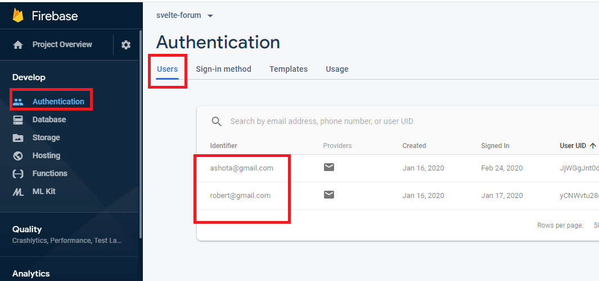
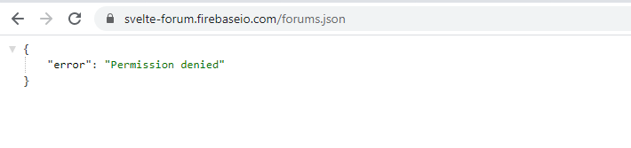
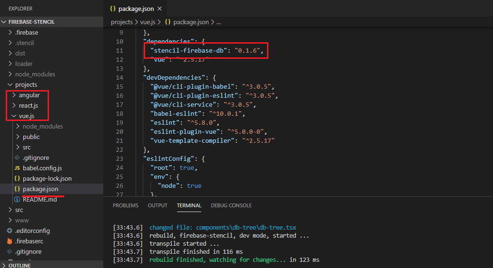

Stenic.js Firebase Web Components
GitHub Repository: https://github.com/Ashot72/stenciljs-firebase
Video Link: https://youtu.be/_h2jh4JzfRM
Web components are just your own custom HTML elements that are not built into the browser but they are created by you as a developer or by some other developer
that you can use in your projects.
Why would we use Web Components?
One great advantage is that a web component allows you to encapsulate logic and a user interface in one custom HTML tag, which can be used across our page
or even reuse across multiple projects. We just take the JavaScript file and drop it into any other project. We can even have a project, say, in Angular, React or
Vue and use the same web component in all of them. That is a great advantage as normally we would not be able to share React components with Angular or
Vue for example. We can also publish our component or a set of components even to npm and then install it into any project that we want to use it with npm install command.
We are going exactly to do that; publish our components to npm and use it both in Angular, React and Vue projects.
Web Components are made up of three important parts.
1) Custom HTML Element is bunch of JavaScript functionalities that allows us to define our own HTML tags and the logic behind it.
2) Shadow DOM specification is all about giving us some features to create our own DOM tree that is hidden away from the main DOM.
It is especially helpful when we talk about CSS styling because the shadow DOM will allow us to define CSS styles that only effect our custom element.
3) Templates and Slots allow us to define our own HTML structure which is hidden behind our custom element and which allows us to add some flexible entry
points, so called slots that we can actually populate with information from outside.
Stencil https://stenciljs.com/ is not a JavaScript framework like Angular and it is not a library like React. It is a tool that runs on your machine
which you will never deploy to a website that is then running in the web. Stencil is a compiler for native web components and in the end, it will
generate a native JavaScript web component.
Stencil gives us a way nicer syntax and lot of convenience features which we can use to write web components in a more convenient and error safe
way using JavaScript and also Typescript. Stencil then will compile that code down to native JavaScript web components. We do not need to ship any
extra library to make these components work in the browser.
If you are familiar with React, Stencil uses JSX and the same principles for displaying data.
Figure 1
I built two Stencil web components that can be talked to each other even without writing a single code to the page they have been added. The first control is an authentication (SignIn/SignUp)
modal web component to authenticate to Firebase and the second one is a Firebase database tree renderer web component. Before exploring the web components, we should understand
where some of the Firebase settings are coming from.
Figure 2
We can query the Firebase Auth backend through a REST API. This can be used for various operations such as creating a new user, signing in existing ones
and editing or deleting these users and the Firebase Web API Key is used for those operations. The key can be obtained from the Project Settings page.
Figure 3
We enabled Email/Password Sign-in in method.

Figure 4
Currently, there are two users authenticated.
Figure 5
All Firebase Realtime Database data is stored as JSON objects. When you add data to the JSON tree, it becomes a node in the existing JSON structure with an associate key.
Figure 6
If you click forums tree node you will be navigated to forums structure. You should notice that the database path is changed to https://svelte-forum.firebaseio.com/forums and in order to access
it from the code you have to append .json. So, the path to access the database becomes https://svelte-forum.firebaseio.com/forums.json
Figure 7
Here is our first modal web component written in Stencil.
Figure 8
The same component can be used both for Sign In and Sign Up.
Figure 9
Once you authenticated you will see database JSON objects rendered as a tree. Firebase database tree renderer is our second component.
Figure 10
If we look at the page source, we will see our two custom controls, fbs-auth-modal and fbs-db-tree. You should also notice that they both have been created with Shadow DOM we already talked about.
Figure 11
The reason they use Shadow DOM is because we defined shadow: true in the custom Stencil web components.
In Stencil web components we use @Prop() and @State() similar to React.
@Prop() does one important thing. Stencil will now watch for the attribute named opened and if we set or change such an attribute or if we directly programmatically set or change the
opened property from outside JavaScript for example, then Stencil will detect the change and will automatically re-run the render method and it will do it in a very efficient manner
so that it does not re-render the entire DOM that was generated based on it; the only the part of the DOM that changed. So, @Prop() is kind of adds an automatic watcher.
Figure 12
If we want to reflect changes of the props, to the attributes (we will see it soon), we can configure a prop by passing a JavaScript object {reflect: true}.
Figure 13
When we click on Sign In button and open the modal having opened prop {reflect: true} then we see that fbs-auth-modal has opened attribute.
Figure 14
Remove {reflect: true}
Figure 15
In this case you see opened attribute is not set. In some scenarios setting attribute can be very useful like in our case. Without opened property our modal is missing and we will find out why.
Figure 16
We want to apply a default style from inside our component (shadow DOM) only if some condition is true on our custom element. We have a special selector :host which allows to style your
element. We change the modal (id=modal) opacity to 1 to make it visible only if our custom control defines opened.
Figure 17
With {reflect: true} we set opened property and our modal with id=modal can be seen as :host([opened]) #modal condition is met and returns true.
Figure 18
You can even test it directly inside the console. Remove or rename opened attribute, hit enter and modal will disappear. Setting opened back will show the modal again.
Figure 19
We can also prove that our component styling is inside the shadow DOM.
Figure 21
When we click on Sign In button we call modal.open() method.
Figure 22
In the code we just set opened prop to true (which in its turn sets opened attribute via reflect: true to our custom control) and modal appears.
Figure 23
By default, Prop can be changed from outside and immutable from inside the component logic. However, it is possible to explicitly allow a Prop to be mutated from
inside the component by declaring it as mutable. As we change this.opened inside the code we should set { mutable: true} to opened prop.
Figure 24
If we set modal.opened = true from outside instead of calling modal.open() method then there is no need to specify {mutable:true} property as we just call it from outside.
Figure 25
We defined slot with default Submit value which is changed either Sign In or Sign Up.
Figure 26
If you want to style slotted content, there is special selector you can use inside your Shadow DOM styling and that is the special pseudo selector ::slotted.
You call this like a function and pass the selector of the slotted content.
Figure 27
I selected all slotted content that has h1 tag. Note, that we can set up some default styling from the main DOM.
Figure 28
Here color property is overwritten to yellow and new margin-left property has been set to h1 tag from the main DOM styling.
Figure 29
You will see some info displayed inside the console after you have been authenticated (Sign In or Sign Up). One of them is idToken. When a user or device signs in using
Firebase Authentication, Firebase creates a corresponding ID token that uniquely identifies them and grant them access to several resources, such as Realtime Database.
You can re-use that ID token to authenticate the Realtime Database REST API and make requests on behalf of that user.
Figure 30
If I navigate to forums.json I can see the database info and do not need authenticate to see it.
Figure 31
The reason is that in Database Rules I allowed forums, topics and posts to be accessed anonymously.
Figure 32
I commented forums not to be accessed anonymously.

Figure 33
Now, I can not retrieve forums; Permission denied.
Figure 34
To access the resource we have to pass IdToken via ?auth=IdToken.
Figure 35
This means that after being authenticated we have to somehow pass the auth info (idToken and the rest) from our first web component which is the modal to the second one
which is the Firebase Database tree renderer in order to authenticate and render the tree.
Figure 36
For that reason, in our modal component we specify fbsAuthenticated event.
bubbles - indicating whether the event bubbles up through the DOM or not.
Composed – indicating weather or not the event can be bubbled across the boundary between the shadow DOM and the regular DOM.
Figure 37
Once we obtain auth data we emit it.
Figure 38
In tree renderer component we listen to the fbsAuthenticated event we emitted from the modal component. By default, @Listen for events emitted inside of the render
function, so of the DOM, of the Shadow DOM belonging to this component. To ensure that it can listen globally we need to specify {target: 'body'}. Our fbsAuthenticated from the modal
bubbles up the DOM tree, all the way to body element.
Figure 39
It reaches the body node and then we can listen to that with {target: 'body'}.
Figure 40
I just signed in and you see that auth info passed from the modal component to tree renderer component via fbsAuthenticated.
Figure 41
You may notice that tree renderer component has a bluish rectangle border when no error occurs.

Figure 42
When an error occurs then the border turned into red.
Figure 43
As we already discussed we can change a default style from inside our component (shadow DOM) by means of a special selector :host. Note, we also
specified :host(.error), by passing .error class to :host.
Figure 44
In tree renderer's component render method we specified Host functional component and assigned class ,error which is called when @State() error state is changed.
When we receive an error such as an invalid database path we just change the state to error and .error class is applied via :Host(.error) rendering red borders.
Figure 45
You can overwrite the .error class from the main DOM.
Figure 46
Components can be composed easily by adding the HTML tag to the JSX code. Since the components are just HTML tags, nothing to be imported to use a Stencil component
within another Stencil component. You see we embedded spinner component both into the modal and tree renderer components.
Figure 47
Modal component spinner.
Figure 48
Tree renderer component spinner. These two components shared the same spinier component.
Figure 49
When you select a tree node then the entire path to the root is displayed on the page where the components have been added.
Figure 50
This time we specify fbsDbPathSelected event in tree render component similar to what we did in the modal component.
Figure 51
In the main page where our components are hosted, we get access to tree renderer component via querySelector then we add event listener to listen fbsDbPathSelected event.
When the event is fired, we get some event data and display it.
Figure 52
I want to use our two controls in Angular, React and Vue projects. The first thing I have to do is to publish it to npm via npm publish command. I named it stencil-firebase-db
and published it.

Figure 53
I created three projects Angular, React and Vue. Also, specified the package I published in order to install via npm install command.
Figure 54
We have to integrate our components into the projects. I will show it for React and you can look into the code for Angular and Vue or read the Stencil integration doc as
Stencil Integration among the frameworks is similar. First, we have to import defineCustomElements from our package we installed via npm install and then we need to execute that
function and pass the window object as an argument. This ensures that our custom elements are added to our project.
Figure 55
Here is the Angular version of the app.
Figure 56
This is the React version of the app.
You see that we shared the same components in different frameworks which is a great advantage as normally we would not be able to share React components with Angular
Or Vue for example. The only difference is that they use different themes.
Figure 57
We have a default color hardcoded in components' CSS files and if no color is specified from outside then that color is used. We can make it settable from outside by using CSS properties.
Figure 58
For Angular we specified brownish color (Figure 55)
Figure 59
For React some aqua color (Figure 56)